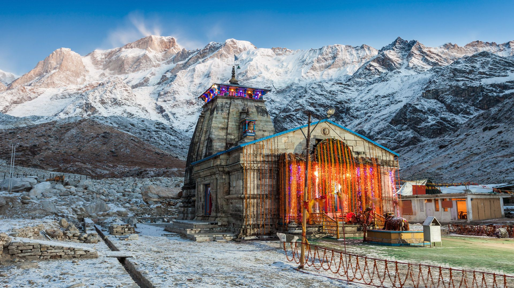
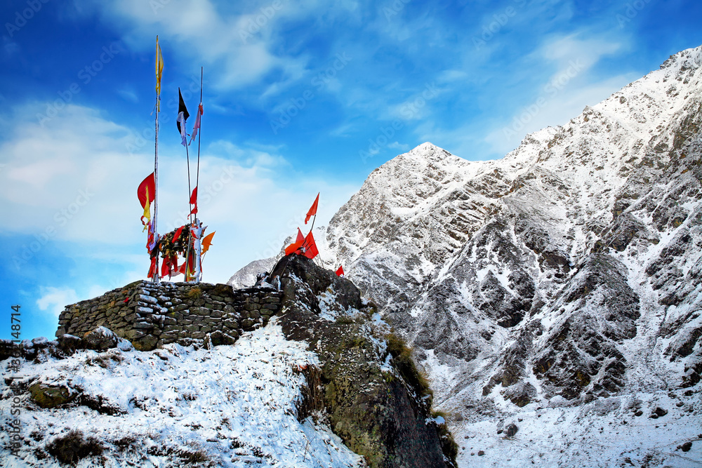
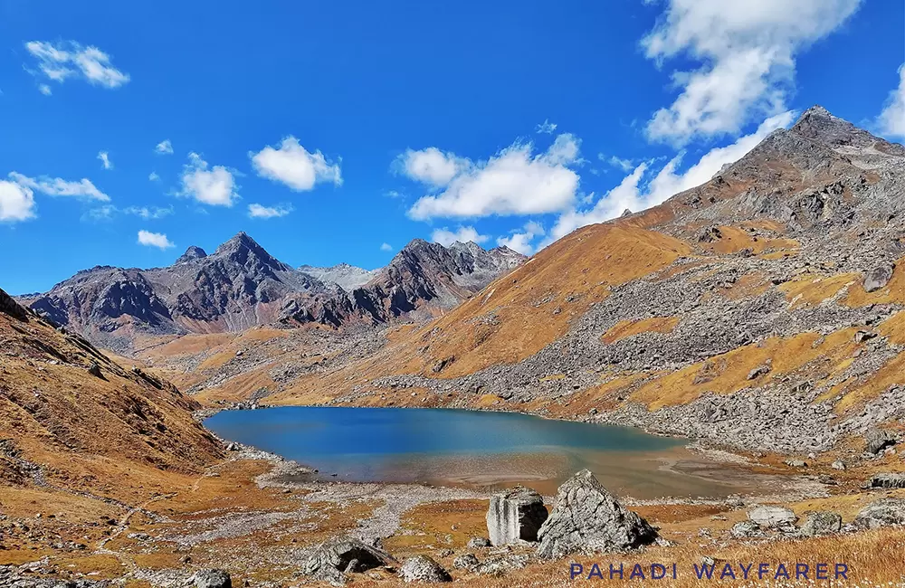
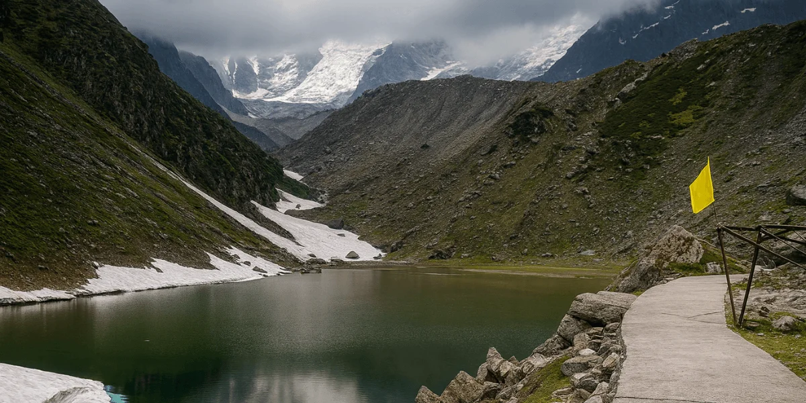
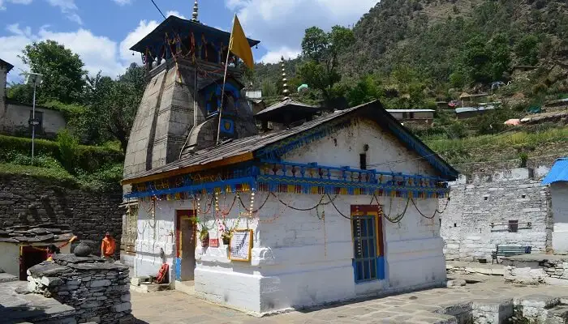
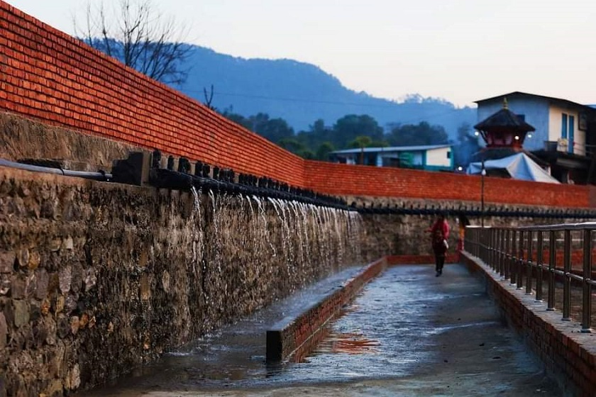

Beyond the temple — discover sacred sites, alpine lakes, and Himalayan viewpoints that make Kedarnath unforgettable.

The Sacred Jyotirlinga · Altitude: 3,583m
Kedarnath Temple is one of the twelve Jyotirlingas of Lord Shiva and the most important temple in the Char Dham circuit. Built in the 8th century by Adi Shankaracharya, the temple stands at the head of the Mandakini River, surrounded by the majestic Kedarnath Peak (6,940m) and Kedar Dome (6,831m).
The temple is made of massive stone slabs and has withstood centuries of harsh Himalayan weather — including the devastating 2013 floods. The lingam here is in the form of a pyramid-shaped rock, unlike other Jyotirlingas.
Morning Aarti at 4:30 AM is a must-attend — the sound of Vedic chants echoing off the mountains as the first rays of sun hit the temple is an experience that stays with you forever.

Guardian of Kedarnath · Altitude: 3,600m
Perched on a small hill just 500 meters behind the main Kedarnath temple, Bhairavnath Temple is dedicated to Bhairav — a fierce manifestation of Lord Shiva, believed to be the guardian of the Kedarnath valley.
According to legend, when the Kedarnath temple closes for winter, the deity's spirit moves to this temple, and Bhairavnath protects the valley until the temple reopens. During winter, when the entire area is buried under snow, this small temple remains as the solitary guardian.
The real magic here is the view. From Bhairavnath, you get the most spectacular panoramic view of the Kedarnath peak, the valley below, and the Mandakini river. Sunrise from this spot (5:30-6:30 AM) is arguably the best photo opportunity in the entire yatra.

High-Altitude Glacial Lake · Altitude: 4,150m
Vasuki Tal is a stunning glacial lake located 8 km from Kedarnath Temple, surrounded by snow-capped Himalayan peaks. The lake gets its name from Vasuki, the serpent king associated with Lord Shiva. The crystal-clear blue-green water reflecting the surrounding mountains creates a surreal landscape.
This is a serious high-altitude trek — you gain over 500m from Kedarnath. The path is steep, rocky, and in some sections, you'll be walking on snow even in June. It takes 4-5 hours one way from Kedarnath. The lake remains partially frozen until late June.
Only attempt this if you are fit and acclimatized. The reward? Absolute solitude, pristine Himalayan beauty, and a sense of accomplishment few pilgrims experience. Most people skip this — if you go, you'll likely have the entire lake to yourself.

Serene Glacial Lake · Altitude: 3,900m
Gandhi Sarovar, also known as Chorabari Tal, is a beautiful glacial lake located just 3 km from Kedarnath Temple. It was renamed Gandhi Sarovar in 1948 when Mahatma Gandhi's ashes were immersed here — a fact that adds deep historical significance to its natural beauty.
The lake is surrounded by rocky terrain and offers a quieter alternative to the main temple area. The water is crystal clear and ice-cold — fed directly by melting glaciers. You can see small icebergs floating in the lake even in June.
Compared to Vasuki Tal, this is a much more accessible trek — about 1.5-2 hours one way. The path is a gradual climb with some rocky sections. It's perfect if you want a short adventure beyond the temple without committing to the Vasuki Tal expedition.

Shiva-Parvati's Wedding Venue · Altitude: 1,980m
Triyuginarayan Temple holds a special place in Hindu mythology — it is believed to be the exact spot where Lord Shiva and Goddess Parvati were married. The name "Triyuginarayan" means "three yugas" — the sacred fire from their wedding is said to have burned here through three cosmic ages (Satya, Treta, and Dwapar Yuga).
The temple has an eternal flame (akhand dhuni) that devotees believe has been burning since the divine wedding. You can still see this flame in front of the temple — pilgrims offer wood and ghee to keep it alive.
Located about 25 km from Kedarnath (near Sonprayag), this temple is accessible by road — no trekking required. It's a peaceful, less-crowded alternative to the main Kedarnath temple and a favorite spot for couples and newlyweds seeking blessings.

Hot Water Spring & Trek Start Point · Altitude: 1,982m
Gaurikund is both a sacred site and the practical starting point of the Kedarnath trek. According to mythology, Goddess Parvati (Gauri) meditated here for thousands of years to win Lord Shiva's love. The natural hot water spring (Gauri Kund) is believed to have been created by her penance.
The hot spring is the highlight — water naturally heated by geothermal activity flows into a small bathing pool. Many pilgrims take a holy dip here before starting the trek. The water temperature is soothing (~40-45°C) and it's especially refreshing after completing the return trek.
Gaurikund also has the registration check post, shops for trekking gear, pony/palki booking counters, and basic lodges. It's the last point with reliable amenities before the 16 km trek begins.
Plan your complete trip — budget, weather, route map, and places to visit. All in one place.
Plan My Trip →